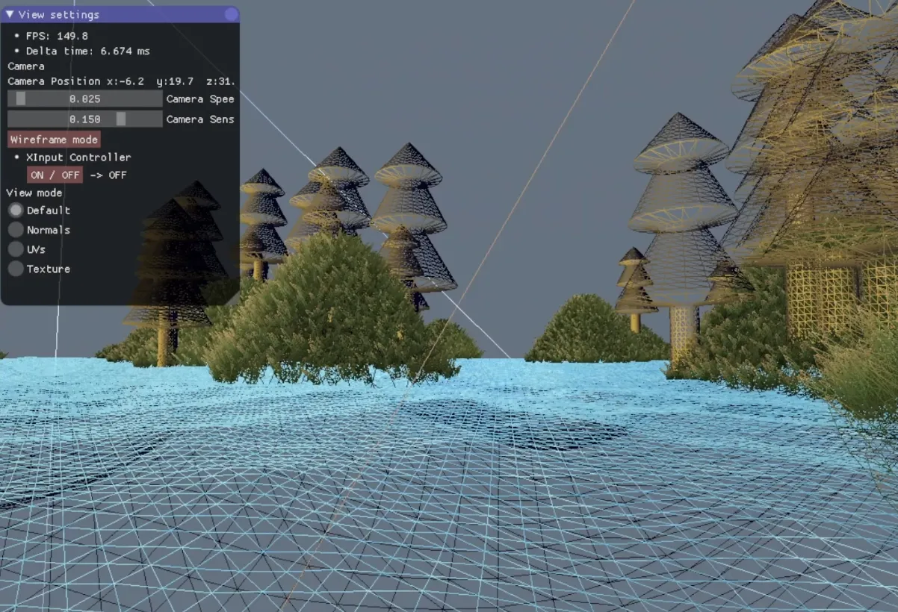
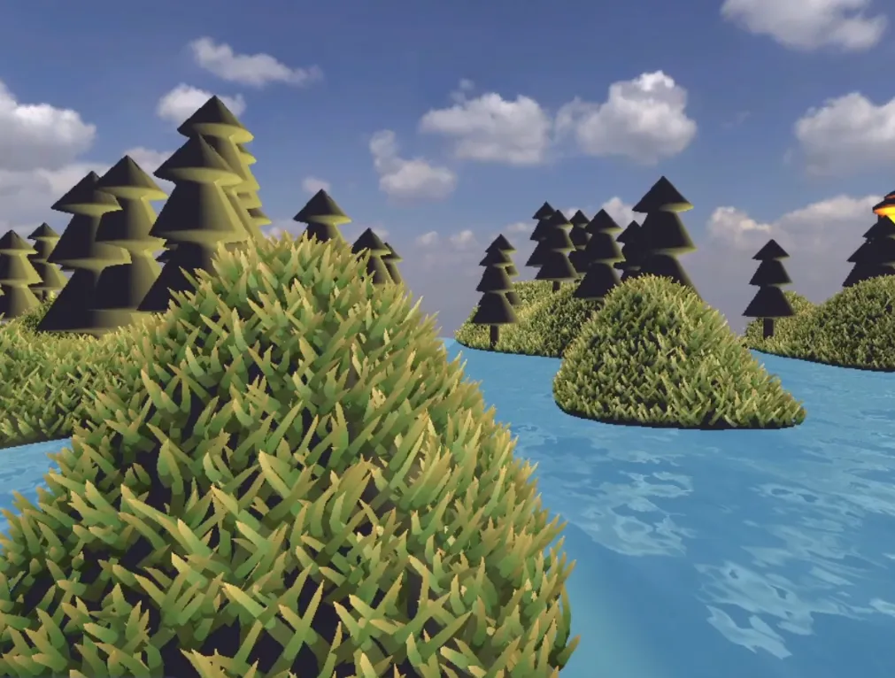
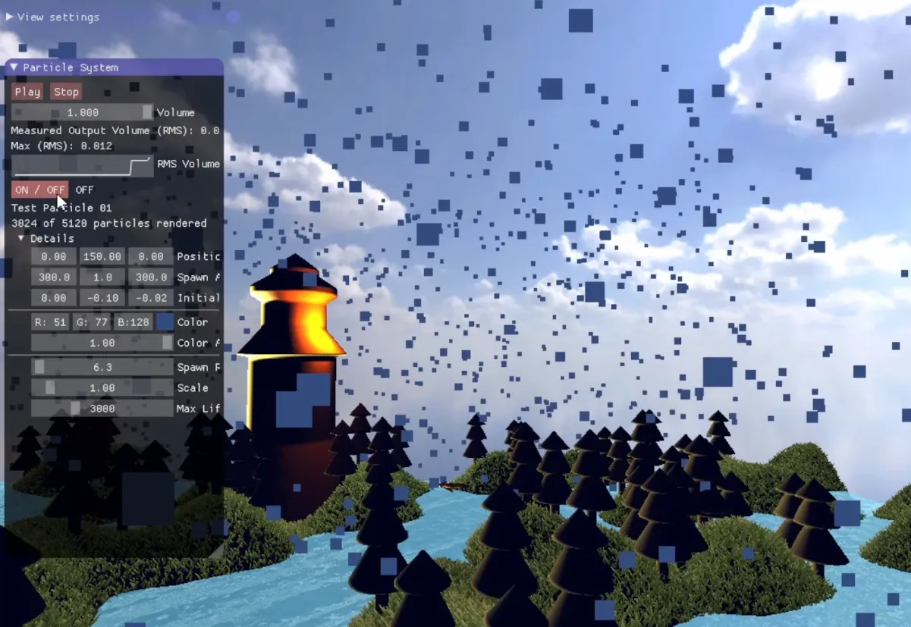

A demo scene built on a custom OpenGL wrapper as part of a University Assignment.
The goal of the project was to create a infinite island world generation while gaining familiarity with basic rendering techniques.
For this project I was in charge of the Water system, Particle System, Controller Support, Postprocessing manager, Grass system and some other small tasks.
Personally I'm quite proud of how the grass turned out. I was inspired by how Sucker Punch created their grass system in Ghost of Tsushima.
Contributions
- Procedural grass system built with Geometry Shaders and Perlin Noise.
- Lightweight GPU-driven particle system for atmospheric effects.
- Ocean surface generated with Geometry Shaders and animated wave functions.
- Postprocessing manager
Tools
- OpenGL
- Git
Languages
- C++
- GLSL
Add image

Add image

Add image
